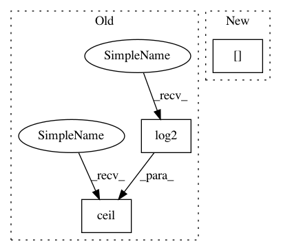

1cdfcfa8a884ffb5f670812ee4b528a76f367be9,librosa/core/constantq.py,,__fft_filters,#Any#Any#Any#Any#Any#Any#Any#Any#Any#,524
Before Change
n_fft = basis.shape[1]
if hop_length is not None and n_fft < 2 * hop_length:
n_fft = int(2.0 ** (np.ceil(np.log2(2 * hop_length))))
// normalize by inverse length to compensate for phase invariance
basis *= lengths.reshape((-1, 1)) / n_fft
After Change
n_fft = int(2.0 ** (1 + np.ceil(np.log2(hop_length))))
// normalize by inverse length to compensate for phase invariance
basis *= lengths[:, np.newaxis] / float(n_fft)
// FFT and retain only the non-negative frequencies
fft_basis = fft.fft(basis, n=n_fft, axis=1)[:, :(n_fft // 2)+1]
In pattern: SUPERPATTERN
Frequency: 3
Non-data size: 3
Instances
Project Name: librosa/librosa
Commit Name: 1cdfcfa8a884ffb5f670812ee4b528a76f367be9
Time: 2016-05-07
Author: brian.mcfee@nyu.edu
File Name: librosa/core/constantq.py
Class Name:
Method Name: __fft_filters
Project Name: scikit-learn-contrib/categorical-encoding
Commit Name: cc1cac8d11ed9db064a9be0d60d69bf609c94d41
Time: 2017-08-31
Author: andrethrilldev@gmail.com
File Name: category_encoders/binary.py
Class Name: BinaryEncoder
Method Name: binary
Project Name: librosa/librosa
Commit Name: f79fd6b1f778f0bd98dc6aec8bd99761f886e80b
Time: 2015-01-18
Author: brian.mcfee@nyu.edu
File Name: librosa/core/constantq.py
Class Name:
Method Name: cqt